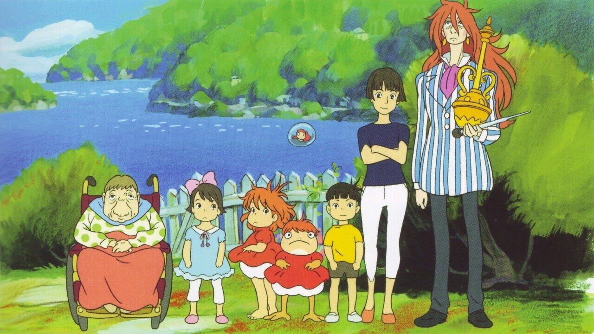

Ponyo崖の上のポニョ (Gake no ue no Ponyo)Release Year2008DirectorHayao MiyazakiProducerToshio SuzukiRunning Time100 minsRT Score⭐ 92%The son of a sailor, 5-year old Sosuke lives a quiet life on an oceanside cliff with his mother Lisa. One fateful day, he finds a beautiful goldfish trapped in a bottle on the beach and upon rescuing her, names her Ponyo. But she is no ordinary goldfish. The daughter of a masterful wizard and a sea goddess, Ponyo uses her father's magic to transform herself into a young girl and quickly falls in love with Sosuke, but the use of such powerful sorcery causes a dangerous imbalance in the world. As the moon steadily draws nearer to the earth and Ponyo's father sends the ocean's mighty waves to find his daughter, the two children embark on an adventure of a lifetime to save the world and fulfill Ponyo's dreams of becoming human.Characters (0)No character information available for this film.Additional InformationLocations (0)NoneSpecies (1)HumanVehicles (0)None